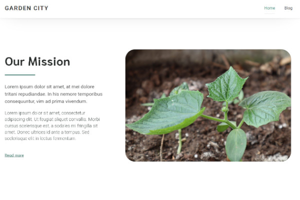
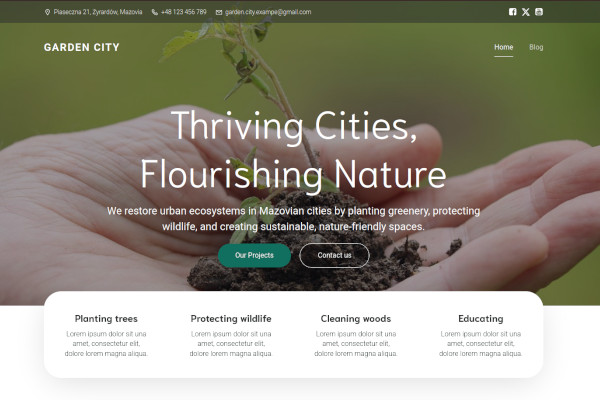

Lilianna Wróbel
Web dev & design
More into design. Got experience with running WordPress and MyBB pages. Ready to learn new things, not scared of java script.
IT Technician
Web dev basics: php, css, js, mysql.
Information Architecture (UMK)
Web design basics, creating websites including wordpress, visualizing information, organizing content.
Projects
Garden City
Wordpress page about ongoing ecological revival of west Mazovia cities.

